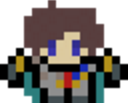

About Me
I am a grade 12 student at Dr. Norman Bethune C.I. I fell in love with programming the first time I played Super Mario Bros on my friends NES. I knew at that point that I wanted to make a game that people would never stop playing. I'm not a avid gamer myself but I love watching people play. IF they're into it, I'll probably be just as into it.
As I got older, I started to realize that computers are more than just tools for games. Computers can do anything. As long as you can think it, there is probably a way to tell the computer how to get it done. Now when the internet became relevant to me, it blew my mind how connecting with someone half way accross the world could be done in less than a minute. At that point I knew that programming is what I want to do after school.
Besides programming, another interest that took hold of me late (Grade 12) is finance. I've always avoided Deca but I knew I had to try it in grade 12. Joining Deca in grade 12 helped me realize my interest in finance. The programming applications for financial products and such are endless. My goal is to pursue computer science and finance in the future.
I also keep myself busy with other hobbies too. When I'm not programming or studying, I enjoy morning runs, practicing bassoon/saxophone and watching movies.
My Projects
|  |
pyCentipedeWhat started as another computer science assigment quickly grew to a full blown recreation of one of my favorite atari games. This Python version of Atari's Centipede is a single player shoot'em up style arcade game where you are trying to last as long as you can. The bugs get progressively faster as you kill them and a kill streak of 10 will get you an extra life. This project is far from over as every so often, someone asks me why my game doesn't have ____ or I myself might come up with a good idea for the next version of the game. In addition to pyCentipede, In the future, I do plan on making more games primarily android and iOS based. |
Personal Web SiteI started this project December 2015 with one goal in mind. I wanted to begin my online portfolio so that I could have a place to put all my previous and future projects for display. The second best thing about doing all these projects are for people to see them so might as well do a good job at displaying them. But I did not realize how much I was going to learn about web development because up until that point, I just assumed that HTML5 and CSS would just be another walk in the park. I've learned a lot from the time spent building my online portfolio. In addition to web development skills, I've learned that you can't build a website like you're drawing a smiley face on paper. Building a website requires lots of planning prior to the actual coding. After you've drawn out the different parts, you have to figure out how you can code it in the most efficient way. The big difference with HTML5/CSS and any other programming language is the interactivity with all the different languages in web development. I've never had to think about the most efficient way to lay out and organize the web page. I know there are many opportunities with web development and in the future I plan on improving what I know. I know this will be a very useful skill not just in university but also in the work force. |
Contact Me
I can be reached through any of the following links below. Please feel free to contact me for my resume